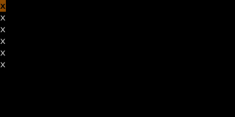
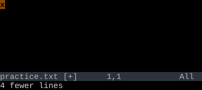

Dot with Counts
Dot lets you change your mind about the count.
Pressing a count before . replaces the count baked into the original change. So 5dw then 10. deletes 10 words, not 5.
The dot register stores the change with its count. When you press {n}., the new count replaces the original. This is rarely the first thing people learn but it's a force multiplier.
| Key | Note |
|---|---|
| {n} | |
| . |
Example: dw deletes a word. 5. deletes 5 words at the new cursor position. The original count (1, implicit) was discarded; 5 took its place.
Reference
| Pattern | Means |
|---|---|
| . | Repeat last change as recorded |
| {n}. | Repeat with count {n} (replaces outer count) |
| {n}., {m}. | Each dot can have its own count — they don't accumulate |
Worked example — 5.
Dot honors counts.


A count on dot replays the change that many times — even if the original change had a different count.
See also: Repeat Last Change, Counts